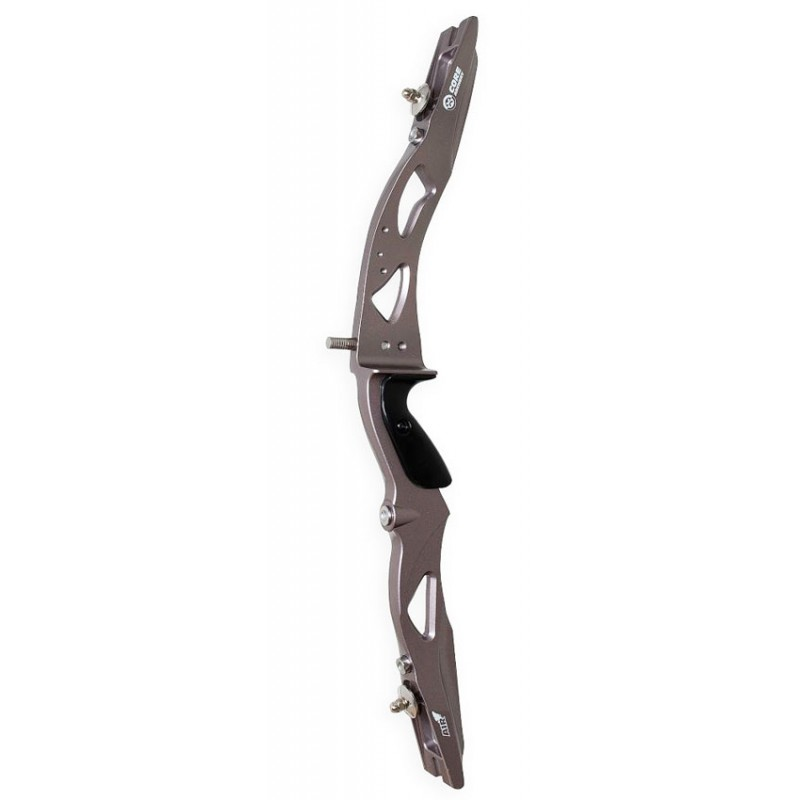
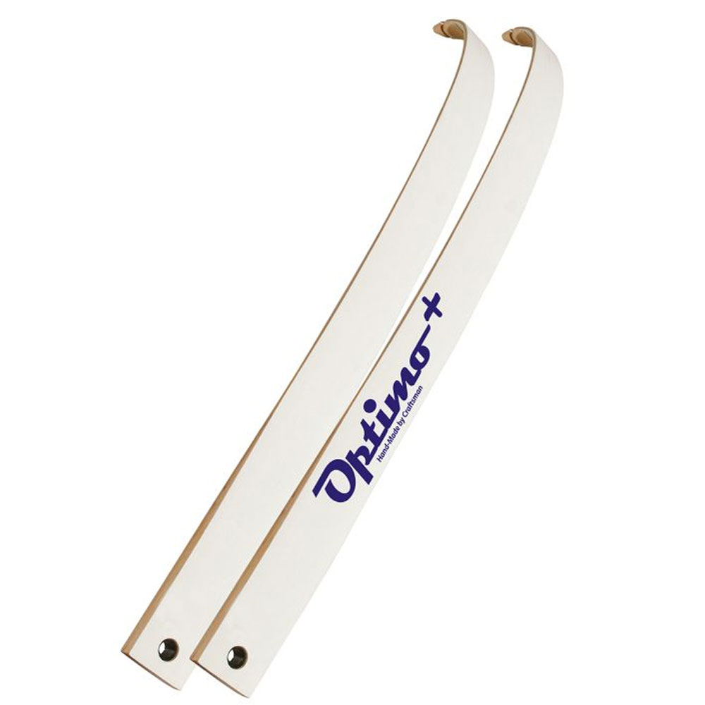
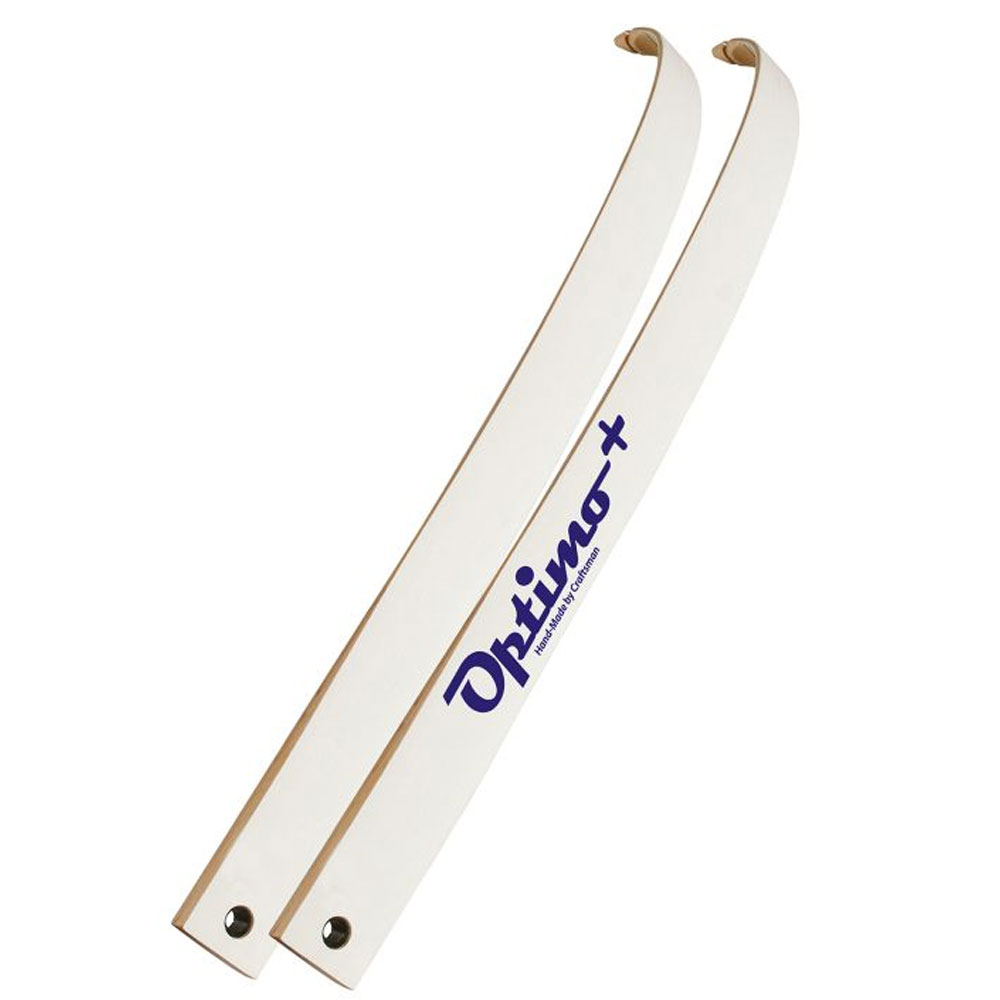

The recurve bow is made of 3 main components:
- The handle riser - or riser - is the handle of the bow, houses the arrow rest, and is what the limbs attach to. The riser is traditionally made of wood, but can also be made of fiber glass on newer model recurves.
- The upper and lower limbs attach to either end of the riser using screws. On newer recurve bows the limbs simply slide and lock into place on special grooves built into the riser. No need to screw on the limbs! However, if you prefer using wooden recurve bows this feature is sadly unavailable.
- The last component of a bow is the string. A string is usually made of highly durable linen or flax fibers. Newer strings are made of synthetic fibers such as Kevlar which is very durable, but can be expensive. The string attaches to either end of the recurve bow and is just long enough to create tension on the bow itself which helps propel the arrow forward. Almost all bow strings used today will also have a 'knock' clamped onto the string itself. It is simply a small piece of copper that archers use when setting an arrow so they know the arrow is straight on the bow.

 
